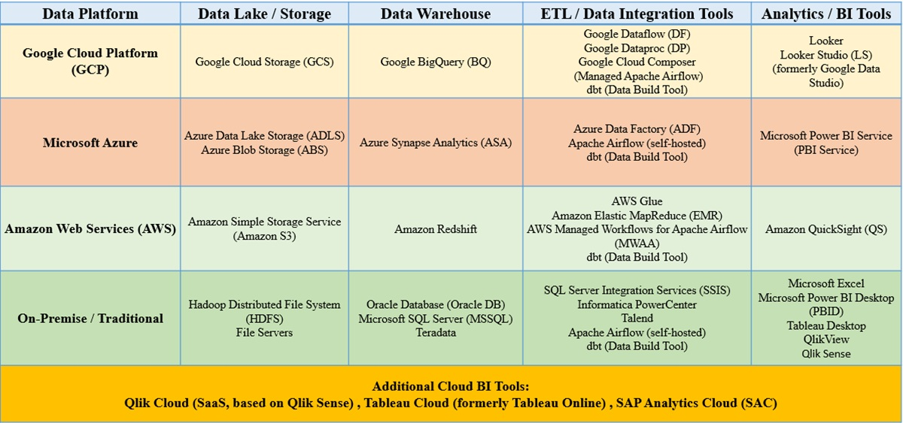
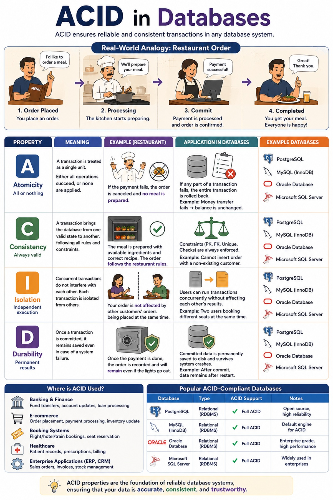
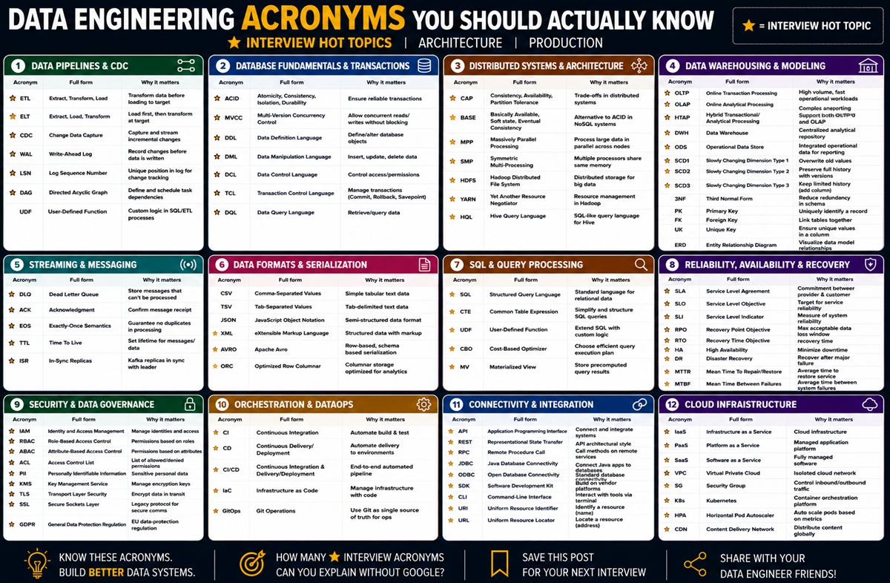
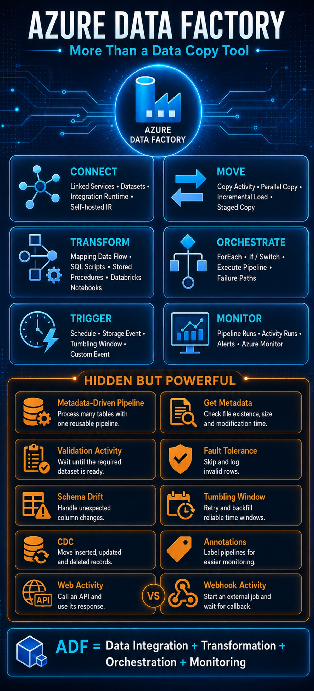
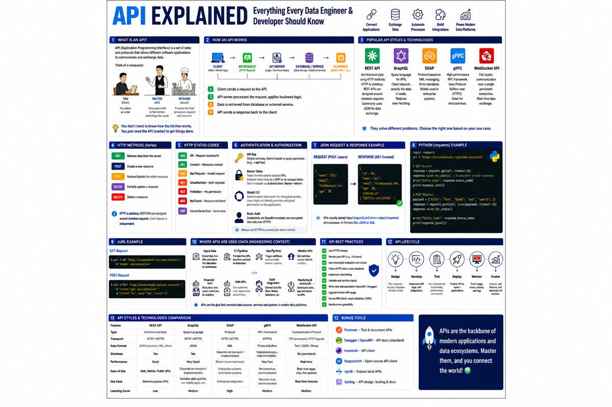
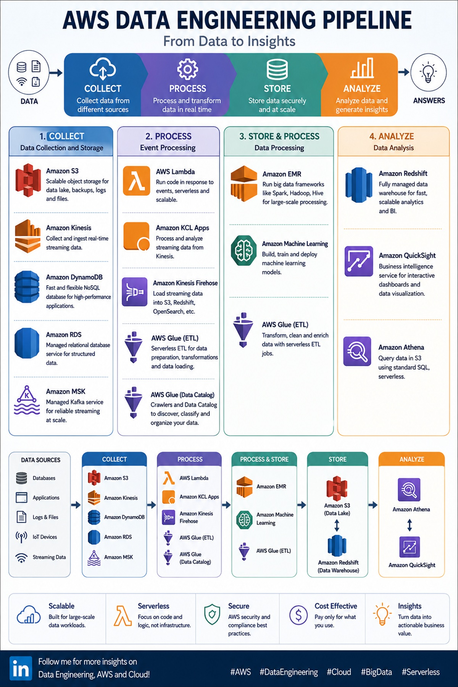
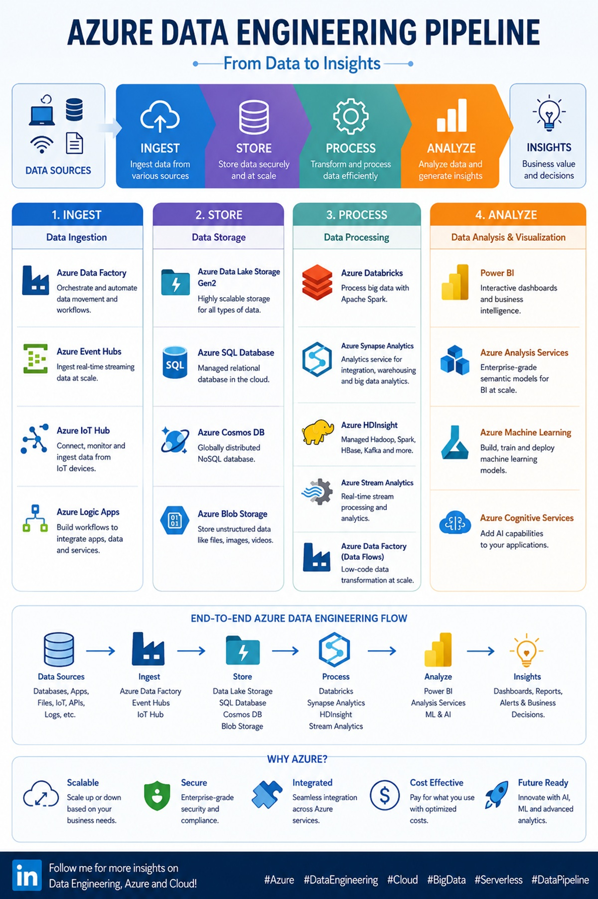
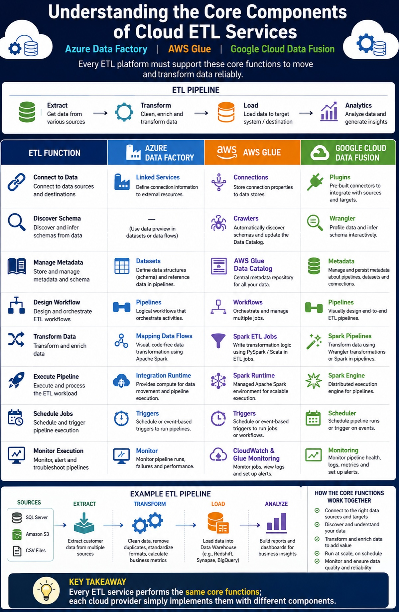
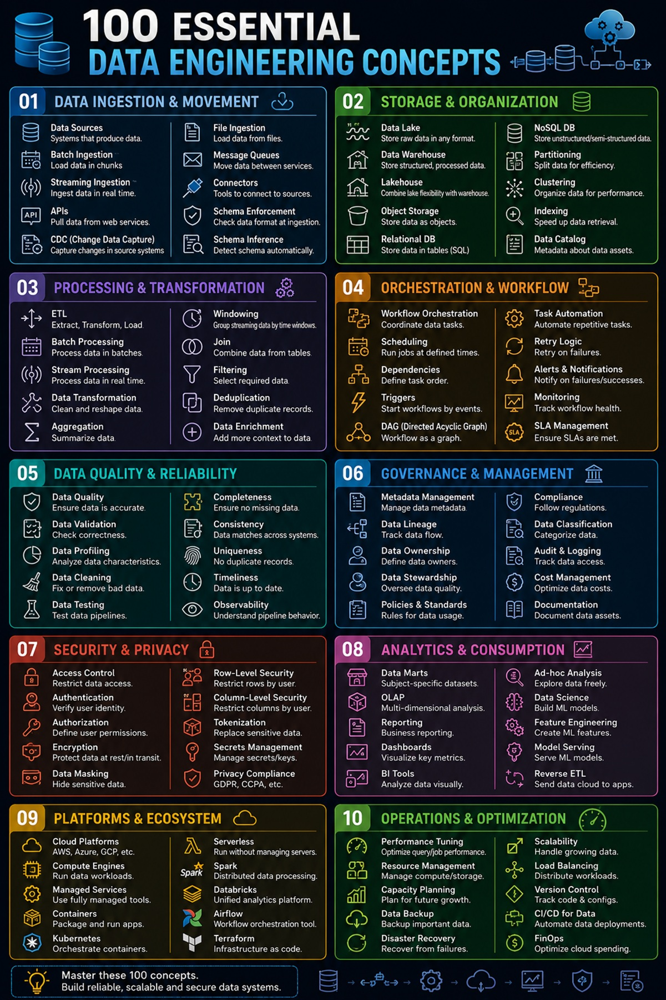

National-Scale Data Integration Pipeline
Project Collaboration
Contributed to a platform integrating distributed regional data through ingestion, transformation, data quality, and incremental processing workflows.
I am a Data Engineer with hands-on experience building batch and streaming pipelines, integrating heterogeneous data sources, transforming and validating data, and preparing analytics-ready datasets for operational and analytical workloads.
My work spans ETL/ELT, batch and near-real-time processing, CDC, data quality validation, dimensional modeling, incremental processing, orchestration, monitoring, troubleshooting, and source-to-target reconciliation.
I work across modern data engineering technologies including Apache Spark, PySpark, Airflow, Kafka, PostgreSQL, SQL Server, ClickHouse, Snowflake, Microsoft Fabric, Azure, Databricks, AWS, Docker, Kubernetes, Git, Prometheus, Grafana, and Power BI.
My portfolio covers enterprise data integration, banking data warehousing and CDC, insurance and manufacturing analytics, operational log processing, lakehouse development, cloud data pipelines, and real-time streaming systems.
Designing reliable, scalable, and analytics-ready data solutions.
Professional experience across data engineering, data integration, analytics, operational data processing, and modern data platforms.
Data Engineering Project Collaboration · Remote
Gonbad-e-Kavus, Iran
TechLabs · Remote · Part-time
Copenhagen, Denmark
Negar Pardazan Alborz (Nepaco)
Tehran, Iran
ElmSanat · On-site · Full-time
Tehran, Iran
Rayan Pouyan Yaran Pars · Full-time
Tehran, Iran
Selected professional and personal projects spanning batch processing, streaming, data integration, data warehousing, cloud platforms, analytics, and operational data processing.
Project Collaboration
Contributed to a platform integrating distributed regional data through ingestion, transformation, data quality, and incremental processing workflows.
TechLabs Copenhagen
Developed a data-driven career recommendation solution using data preparation, feature engineering, machine learning, and interactive analytics to match user profiles with relevant career paths.
Nepaco
Integrated customer, policy, claims, and payment data from multiple source systems into validated, analytics-ready datasets for insurance reporting and analysis.
Nepaco
Integrated production, machine, maintenance, and quality data to support operational performance, equipment reliability, and product quality analysis.
Nepaco
Integrated customer, account, branch, and transaction data into analytics-ready dimensional models for banking reporting and analysis.
Nepaco
Captured and processed database changes in near real time to synchronize operational banking data with downstream analytical systems.
ElmSanat
Built batch processing workflows for CCTV, NVR/DVR, server, and device logs using Python, Apache Spark, PostgreSQL, and Linux; transformed raw logs into structured data for failure analysis and operational monitoring.
ElmSanat
Built real-time streaming workflows using Apache Kafka and Spark Structured Streaming; processed and filtered critical device events for near-real-time monitoring and rapid detection of operational issues.
Rayan Pouyan Yaran Pars
Integrated data from relational databases, business applications, REST APIs, JSON/XML, and file-based sources into standardized centralized datasets for downstream enterprise systems.
Rayan Pouyan Yaran Pars
Migrated and synchronized legacy data across heterogeneous systems through schema mapping, cleansing, validation, exception handling, and source-to-target reconciliation.
Rayan Pouyan Yaran Pars
Consolidated and standardized master data across multiple business applications, resolving duplicate and inconsistent records and synchronizing validated data between operational systems.
Personal Project
Parsed and transformed raw web access logs using PySpark DataFrame APIs; analyzed traffic, HTTP status, user agents, popular URLs, and high-frequency request patterns.
View architecture & project details →
Personal Project
Built an automated ELT pipeline integrating Neon PostgreSQL, Fivetran, Snowflake, dbt, and Databricks to transform source data into analytics-ready datasets.
Personal Project
Built an end-to-end Azure data pipeline for ingestion, transformation, storage, and analytics using Data Factory, ADLS Gen2, Databricks, dbt, and Synapse Analytics.
Personal Project
Built an end-to-end retail lakehouse for ingesting, transforming, modeling, and visualizing sales data using Microsoft Fabric, OneLake, PySpark, and Power BI.
Personal Project
Built a real-time streaming pipeline to ingest Kafka events into ClickHouse for low-latency storage and analytical querying.
A growing collection of practical posts about data engineering, data architecture, cloud platforms, databases, ETL, and lessons learned from hands-on projects.

A visual comparison of cloud and on-premises data environments, their architecture, responsibilities, and common use cases.
View on LinkedIn
A practical visual explanation of Atomicity, Consistency, Isolation, and Durability in reliable database transactions.
View on LinkedIn
A compact reference for common data engineering acronyms and terminology used across modern data platforms.
View on LinkedIn
A visual overview of Azure Data Factory and how it supports ingestion, orchestration, transformation, and data movement.
View on LinkedIn
A practical overview of APIs as data sources and how they fit into modern ingestion and integration workflows.
View on LinkedIn
An architecture-focused view of how AWS services can be combined to build an end-to-end data engineering pipeline.
View on LinkedIn
A visual end-to-end Azure pipeline showing how cloud services work together from ingestion to analytics-ready data.
View on LinkedIn
A comparison-oriented overview of common cloud ETL and data integration services across modern platforms.
View on LinkedIn
A visual reference covering foundational concepts and building blocks used throughout data engineering systems.
View on LinkedInNew posts will be added here over time. Direct links to individual LinkedIn posts can be connected as the collection is updated.
Professional certificates and credentials supporting my development across data, analytics, and language skills.
Open to data engineering opportunities, data platform projects, and collaboration around batch, streaming, integration, cloud, and analytics solutions.